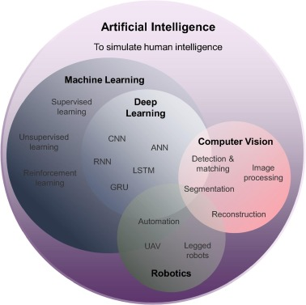
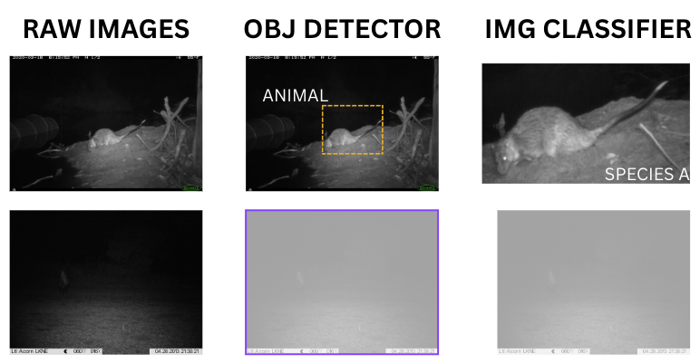
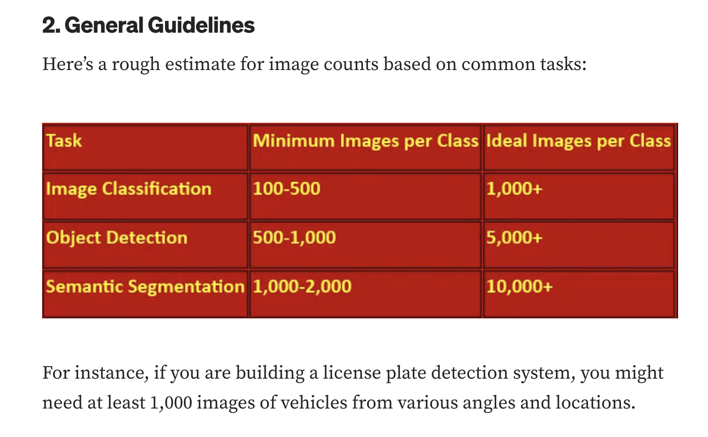
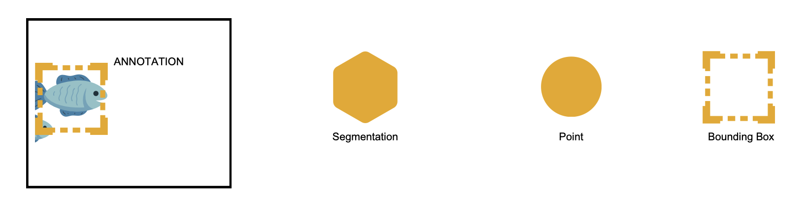

![]()
mpg cyl disp hp drat wt qsec vs am gear carb
Mazda RX4 21.0 6 160.0 110 3.90 2.620 16.46 0 1 4 4
Mazda RX4 Wag 21.0 6 160.0 110 3.90 2.875 17.02 0 1 4 4
Datsun 710 22.8 4 108.0 93 3.85 2.320 18.61 1 1 4 1
Hornet 4 Drive 21.4 6 258.0 110 3.08 3.215 19.44 1 0 3 1
Hornet Sportabout 18.7 8 360.0 175 3.15 3.440 17.02 0 0 3 2
Valiant 18.1 6 225.0 105 2.76 3.460 20.22 1 0 3 1
Duster 360 14.3 8 360.0 245 3.21 3.570 15.84 0 0 3 4
Merc 240D 24.4 4 146.7 62 3.69 3.190 20.00 1 0 4 2
Merc 230 22.8 4 140.8 95 3.92 3.150 22.90 1 0 4 2
Merc 280 19.2 6 167.6 123 3.92 3.440 18.30 1 0 4 4
Merc 280C 17.8 6 167.6 123 3.92 3.440 18.90 1 0 4 4
Merc 450SE 16.4 8 275.8 180 3.07 4.070 17.40 0 0 3 3
Merc 450SL 17.3 8 275.8 180 3.07 3.730 17.60 0 0 3 3
Merc 450SLC 15.2 8 275.8 180 3.07 3.780 18.00 0 0 3 3
Cadillac Fleetwood 10.4 8 472.0 205 2.93 5.250 17.98 0 0 3 4
Lincoln Continental 10.4 8 460.0 215 3.00 5.424 17.82 0 0 3 4
Chrysler Imperial 14.7 8 440.0 230 3.23 5.345 17.42 0 0 3 4
Fiat 128 32.4 4 78.7 66 4.08 2.200 19.47 1 1 4 1
Honda Civic 30.4 4 75.7 52 4.93 1.615 18.52 1 1 4 2
Toyota Corolla 33.9 4 71.1 65 4.22 1.835 19.90 1 1 4 1
Toyota Corona 21.5 4 120.1 97 3.70 2.465 20.01 1 0 3 1
Dodge Challenger 15.5 8 318.0 150 2.76 3.520 16.87 0 0 3 2
AMC Javelin 15.2 8 304.0 150 3.15 3.435 17.30 0 0 3 2
Camaro Z28 13.3 8 350.0 245 3.73 3.840 15.41 0 0 3 4
Pontiac Firebird 19.2 8 400.0 175 3.08 3.845 17.05 0 0 3 2
Fiat X1-9 27.3 4 79.0 66 4.08 1.935 18.90 1 1 4 1
Porsche 914-2 26.0 4 120.3 91 4.43 2.140 16.70 0 1 5 2
Lotus Europa 30.4 4 95.1 113 3.77 1.513 16.90 1 1 5 2
Ford Pantera L 15.8 8 351.0 264 4.22 3.170 14.50 0 1 5 4
Ferrari Dino 19.7 6 145.0 175 3.62 2.770 15.50 0 1 5 6
Maserati Bora 15.0 8 301.0 335 3.54 3.570 14.60 0 1 5 8
Volvo 142E 21.4 4 121.0 109 4.11 2.780 18.60 1 1 4 2A Masterclass on Computer Vision and Roboflow
April 7, 2025
Objectives and Overview
Why this workshop (WildObs)
- WildObs
- A national platform for camera trap monitoring.
- Primary Objective: Staff training - understand computer vision models.
- Secondary Objective: WildObs may want to use Roboflow tools (e.g.,Python SDK) for model development and model deployment. ## Why this workshop (DETSI) DETSI
- Developing an -inhouse- solution for key QLD wildlife species. PSP Advance QLD project.
- Primary Objective: Get familiar with Roboflow and understand the theory behind computer vision models.
- Secondary Objective: Roboflow will be used to host and develop a computer vision model for DETSI.
Collaborative effort
Note
DETSI will be contributing datasets to WildObs. DETSI intends to use WildObs.
Modules Overview
- Module 1: AI, Deep Learning, and Computer Vision
- Module 2: Understanding the computer vision workflow
- Module 3: Building your model development dataset
- Module 4: Model training and evaluation
- Module 5: Model inference
- Module 6: Roboflow ‘workflows’
Module 1: AI - DL - CV

What is Deep Learning?
- A subset of Machine Learning to train neural networks and make predictions
What is Computer Vision?
- A field of AI that enables computers to interpret and understand visual information
- Key applications: classification, object detection and segmentation
Computer vision tasks
- Image Classification: Assigns a label to an entire image (e.g., “possum”, “animal”)
- Object Detection: Identifies and localizes multiple objects within an image (e.g., “cat” at (x,y) coordinates, “dog” at (x,y) coordinates)
- MegaDetector is an generic object detector
CV tasks in the context of camera trap monitoring
Module 2: Understanding the computer vision workflow
Key Steps ✨with the Roboflow sparkle✨
- Objective and infrastructure
- Data collection and pre-processing
- Create account and project
- Data splitting
- Data upload
- Data annotation
- Building your model development dataset
- Model training
- Model evaluation
- Model inference
- Post-processing
Objective and Infrastructure
- Objective: Define the problem you want to solve (e.g., species identification, behavior analysis)
- How many classes?
- What is the expected accuracy?
- What is the long-term goal?
- Infrastructure: Determine the hardware and software requirements for your project
- GPU/CPU requirements
- Storage capacity
🪜Data collection and pre-processing
- Data Collection: Camera traps
- Data Pre-processing: Cleaning and preparing data for further analysis
- Rename files
- Move files to appropriate folders
🪜Create account and project
- Let’s go to Roboflow!
- Create a Roboflow account
- Create a new project
🪜 Data Splitting Part 1
- Now we need data to add into our project
- Model development dataset (e.g., training, validation, evaluation)
- Inference dataset
Note
Depending on the dataset size, the model development dataset can be between 10-20% of the entire dataset.
Data Splitting Part 2 : Broad types of data selection
- Computer vision researchers -> Random selection
- Env computer vision researchers -> Targeted selection
Important
The data splitting process is crucial and takes time.
Important
The model development dataset should be representative of the data that will be processed in the field / future. Variability is key.
Data Splitting Part 3: Importance of metadata
Metadata is crucial for understanding the context of the images and ensuring that the model is trained on relevant data.
- Model trained on images from 🏖️ will not be accurate when deployed in 🏞️
- Model trained on images collected during ☀️ hours will not be accurate when processing images collected at 🌝
- For a single location, a model trained on images collected in
year 1will not be accurate when processing images collected inyear 2
Data Splitting Part 4: Relationship between objectives - metadata and data splitting
- This is why its important to determine your objectives at the beginning of the project
- Questions that require answers?
- How many classes?
- How many ecosystems / locations?
- How many seasons / years?
Data Splitting Part 4: Relationship between objectives - metadata and data splitting
An example - How many classes? - 20 classes - How many ecosystems / locations? - 3 ecosystems - How many seasons / years? - 2 seasons
Note
Let’s use a conservative 1,500 images per class
Data Splitting Part 5: How many images do I need?
https://joelnadarai.medium.com/the-art-of-choosing-the-right-number-of-images-for-your-computer-vision-project-6e45efd1efbf#:~:text=For%20fine%2Dtuning%20pre%2Dtrained,per%20class%20for%20detection%20tasks.
In my experience, there is no magic number.
Data Splitting Part 6: What to do with class imbalance?
- Class imbalance: When one class has significantly more images than another
- Solutions:
- Merging classes
- Data augmentation
- Data filtering
- Data collection
Data Splitting Part 7: Class imbalance example
| Class | Number of Images | Notes |
|---------------|------------------|-----------------------------------|
| Kangaroo | 1,200 | Overrepresented |
| Skink | 300 | Underrepresented |
| Emu | 150 | Severely underrepresented |
| Wombat | 800 | Moderately represented |
| Possum | 100 | Severely underrepresented |
| Dingo | 600 | Balanced |
| Echidna | 50 | Rarely detected |
| Cockatoo | 1,000 | Overrepresented |
| Platypus | 20 | Extremely rare |
| Wallaby | 700 | Balanced |Module 3: Building your model development dataset
Recap Steps ✨with the Roboflow sparkle✨
- Objective and infrastructure ✅
- Data collection and pre-processing ✅
- Create account and project ✅
- Data splitting ✅
- Data upload 👈🏼
- Data annotation
- Building your model development dataset
- Model training
- Model evaluation
- Model inference
- Post-processing
🪜 Data upload part 1
- Upload images to Roboflow
- Batch Name 🗒️
- Use a name that makes sense for later filtering
- Tags 🏷️
- Use tags that can help break down the data (e.g., ecosystem, year, season)
- Similar images from Object365
- 💡 Be careful with the license and introducing unwanted bias
- Upload images to Roboflow (Python SDK)
from roboflow import Roboflow
# Initialize the Roboflow object with your API key
rf = Roboflow(api_key="YOUR_PRIVATE_API_KEY")
# Project:https://app.roboflow.com/my-workspace/my-project
workspaceId = 'my-workspace'
projectId = 'my-project'
project = rf.workspace(workspaceId).project(projectId)
# Upload the image to your project
project.upload("UPLOAD_IMAGE.jpg")Data upload part 2
Tip
Upload images in batches that make sense for your project. My tip: upload images based on initial data splitting.
Tip
Always keep an eye on your Roboflow limits.
🪜 Data annotation part 1
Annotation types
Data annotation part 2
- Labelling images in Roboflow
- Auto Label
- Grounding DINO
- My Models (e.g., MegaDetector or SpeciesNet)
- Roboflow trained models
- Upload via API ⭐️
- Importance of confidence threshold when using zero-shot models
- Manual Label
- Auto Label
Data annotation part 3
- Labelling images in Roboflow
- Auto Label
- Manual Label
- Review (Approve or Reject)
- Manual bbox
- Smart labelling
- Bounding box prompting
Tip
Label every relevant object in every image, even if it’s partially visible - Roboflow
Important
You can always import labels from other tools / models / projects for images into Roboflow
🪜 Building your model development dataset
- Training: Used to train the model - 70% of model development data
- Validation: Used to tune hyperparameters and prevent overfitting - 10% of model development data
- Evaluation: Used to assess the model’s performance on unseen data - 20% of data of model development
Tip
Reminder: Upload images in batches that make sense for your project. My tip: upload images based on initial data splitting.
Note
Sometimes researchers use a further ‘test’ dataset. A harder dataset to do a final query on the model’s performance.
Building your model development dataset - an example
Remember this is for 1 class
| Ecosystem | Year 1 (Train) | Year 2 (Train) | Year 1 (Val) | Year 2 (Val) | Year 1 (Test) | Year 2 (Test) | Total |
|-------------|----------------|----------------|--------------|--------------|---------------|---------------|-------|
| Ecosystem 1 | 175 | 175 | 25 | 25 | 50 | 50 | 500 |
| Ecosystem 2 | 175 | 175 | 25 | 25 | 50 | 50 | 500 |
| Ecosystem 3 | 175 | 175 | 25 | 25 | 50 | 50 | 500 |
| Total | 525 | 525 | 75 | 75 | 150 | 150 | 1,500 |Module 4: Model training and evaluation
Recap Steps ✨with the Roboflow sparkle✨
- Objective and infrastructure ✅
- Data collection and pre-processing ✅
- Create account and project ✅
- Data splitting ✅
- Data upload ✅
- Data annotation ✅
- Building your model development dataset ✅
- Model training 👈🏼
- Model evaluation
- Model inference
- Post-processing
🪜Model training
- Create a dataset version
- Data augmentation
- Data filtering
- Select a model architecture
- Comments around RF-DETR
Download the dataset version (Python)
from google.colab import userdata
from roboflow import Roboflow
ROBOFLOW_API_KEY = userdata.get('ROBOFLOW_API_KEY')
rf = Roboflow(api_key=ROBOFLOW_API_KEY)
project = rf.workspace("selencakmak").project("tumor-dj2a1")
version = project.version(1)
dataset = version.download("yolov8")Train the model (CLI)
!yolo task=detect mode=train epochs=50 batch=32 plots=True \
model={HOME}/weights/yolov10n.pt \
data={dataset.location}/data.yamlI highly recommend you learn about batches and epochs
🪜Model validation - evaluation
- Two different things
- Validation: Assess the model’s performance on the validation set during training
- Monitor metrics like loss and accuracy
- Adjust hyperparameters to improve performance
- Evaluation: Assess the model’s performance on the evaluation set after training
Model validation and evaluation - metrics
- Precision: The ratio of true positive predictions to the total predicted positives
- Recall: The ratio of true positive predictions to the total actual positives
- F1 Score: The harmonic mean of precision and recall
Understanding validation and evaluation results
- Lets review these outputs in Roboflow
Note
We will not be able to cover how to review these metrics in a programmatic environment
Module 5: Model inference
Recap Steps ✨with the Roboflow sparkle✨
- Objective and infrastructure ✅
- Data collection and pre-processing ✅
- Create account and project ✅
- Data splitting ✅
- Data upload ✅
- Data annotation ✅
- Building your model development dataset ✅
- Model training ✅
- Model evaluation ✅
- Model inference 👈🏼
- Post-processing
🪜Model inference
- Inference: The process of using a trained model to make predictions on new, unseen data
- Let’s use the Deployments tab in Roboflow to deploy our model
🪜Post-processing
- Not going to go in depth here
- Confidence threshold
- Non-max suppression
- Tracking
Example of a computer vision output dataset
Below is an example of a classic computer vision (object detection) dataset structure:
| Filename | Class | xmin | xmax | ymin | ymax | Confidence |
|--------------|------------|------|------|------|------|------------|
| image1.jpg | kangaroo | 50 | 150 | 60 | 160 | 0.95 |
| image2.jpg | possum | 30 | 130 | 40 | 140 | 0.20 |
| image3.jpg | bird | 100 | 200 | 120 | 220 | 0.92 |
| image4.jpg | cat | 70 | 170 | 80 | 180 | 0.97 |
| image5.jpg | dog | 20 | 120 | 30 | 130 | 0.85 |
| image6.jpg | bird | 90 | 190 | 110 | 210 | 0.90 |In most cases you will get results as a JSON file or individual txt files (for each image). You will spend some time doing data wrangling.
Module 6: Roboflow workflows
Workflows to assist development
- Build your model development dataset quickly
- Upload images
- Use MegaDetector or SpeciesNet
- Auto-assign labels
- Auto-data splitting
- Training - Evaluation
Recap of Modules
Recap of Modules
- Module 1: AI, Deep Learning, and Computer Vision
- computer vision tasks
- Module 2: Understanding the computer vision workflow
- importance of data splitting
- Module 3: Building your model development dataset
- annotations and dataset versioning
- Module 4: Model training and evaluation
- Different ways to train a model and evaluate it
- Module 5: Model inference
- Post-processing and data wrangling
- Module 6: Roboflow workflows
- Workflows to assist development